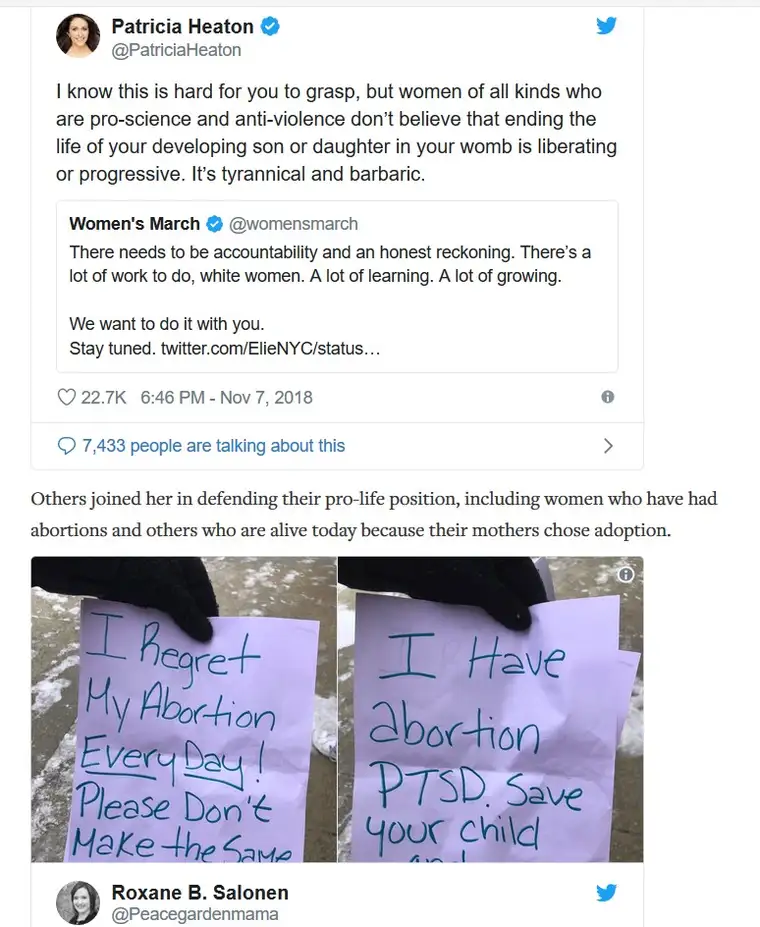

Usually, when I receive a Google alert that my name has appeared somewhere online, it’s referencing an article I’ve written that is floating around cyberspace somewhere. More often than not, it’s not a surprise because I already knew about the piece, since I wrote it.
But every once in a while, something interesting pops up in my Google-alert notices. This one has a bit of a story attached.
On Wednesday, I was, as often, praying with other sidewalk advocates at our state’s only abortion facility. There, I met a lovely young woman who, as it turned out, had had an abortion at that very facility a year ago, and had been moved to drive an hour to return, all to warn the women seeking abortion that their “choice” is a destructive solution, and one she regrets every day of her life.
She and I had a good conversation. I tried planting some helpful ideas on seeking healing. She was helpful to me in turn, sharing about her experience, including how, inside the facility, numerous people had assured her she’d feel relief soon after the “procedure.” “That never happened,” she said, downcast.
Her two small signs, made in a rush, she said, provided both a testimonial and warning to others. I asked if I could take photos of the signs, explaining that I often share what happens on the sidewalk with others. It’s a way to educate and bring the sidewalk to those who want to be with us, but for whatever reason, cannot. She had no problem sharing. She wanted her message to be known. “No one seems to want to hear about what happens to us after the abortion,” she said.
Later, I posted the photos to Facebook with a little explanation. I did the same on Twitter. Then, that evening, I noticed a conversation that had erupted about abortion on Twitter concerning the controversial Women’s March. I first caught a tweet responding to the initial posting by actress Patricia Heaton.
The Women’s March organizers had tweeted, regarding the outcome of the midterm elections: “There needs to be accountability and an honest reckoning. There’s a lot of work to do, white women. A lot of learning. A lot of growing. We want to do it with you. Stay tuned.”
Among those who responded was former Planned Parenthood CEO, Cecile Richards, who wrote: “As a white woman, I’m reflecting on the role we played. In a lot of places, white women failed to support progressive candidates. We have important work to do to be in solidarity with women of color & help others see that racism, sexism, & bigotry are intertwined & hurt us all.”
Heaton, taking this all in, responded: “I know this is hard for you to grasp, but women of all kinds who are pro-science and anti-violence don’t believe that ending the life of your developing son or daughter in your womb is liberating or progressive. It’s tyrannical and barbaric.”
Since I’d recently left the sidewalk where I’d been affected by the testimony of someone who deeply regretted her abortion — a testimony shared while wiping away fresh tears — this whole issue and how it affects women was on my mind, so I posted the visuals of her signs within the thread, knowing their witness could be powerful.
And they were. People responded, sharing how they, too, regretted their abortion. It made the impact I’d intended, mostly. But I quickly realized something was a little off. In my haste, I’d failed to clarify that these notes were not my own, but that of my new friend. And so the thread took off in a direction I wasn’t intending, with those responding doing so in sympathy for ME. I felt awful that my omission had led to a misunderstanding, which now had taken on a life of its own. Despite trying to correct it, many missed my explanation, and continued to respond to the tweet they thought contained my own words.
Jump ahead now to last night — just two days later — and finding the Google alert. It’s for an article on “LifeNews.com.” Why would I be getting a Google alert for this publication? After clicking on the article, I soon began to understand.

The Twitter thread I just mentioned had become part of an article for this national pro-life magazine discussing one of the conversations unfolding from this week’s midterm elections — in particular, what people like the Women’s March organizers are saying, and how pro-life people are responding in “real” time. And there was my tweet, and the omission, and me trying to set it all right. (To review full thread, see article here.)

It was a blunder, and through it, I’ve learned to try slowing down a little to make sure I’m clear in what I’m communicating. Though I can’t promise I’ll never again make such a mistake, I see how easily things can go off course out there on the web.
That’s one take on the whole thing, but I also see another. In removing myself as much as possible, I see how I can, in a sense, take one for the team here. I am not post-abortive. Though I do have wounds in my life that I have tried to heal from and work through, abortion is not among them. However, having talked to many who have experienced abortion, I’ve become convinced that these voices need to be heard, and I’m glad to encourage those who feel it on their hearts to do so.
Seen from this angle, my mistake is inconsequential, really. It was important to try to correct it, but beyond that lies a gem. The visuals are out there, and they’ve made an impact. The new friend who wrote them had shared frustration about how no one wants to hear what happens to women after their abortion. And in a matter of days, many had a chance to read part of her story.
Certainly, I can’t regret that the message that abortion hurts women has now received some prominent attention. I trust God will use this woman’s simple but powerful testimony to enlighten many, and for that I am grateful. Soon, I hope to see her again and share all this with her. I want her to know that her words just a few days ago were not written in vain, but have been far more reaching than she could have known.
So, there it is, a lesson in humility of how easily we can “mess up,” even when we’re not trying. And how easily God can turn our blunders into something beautiful.
Q4U: When did your mistake became something meaningful?